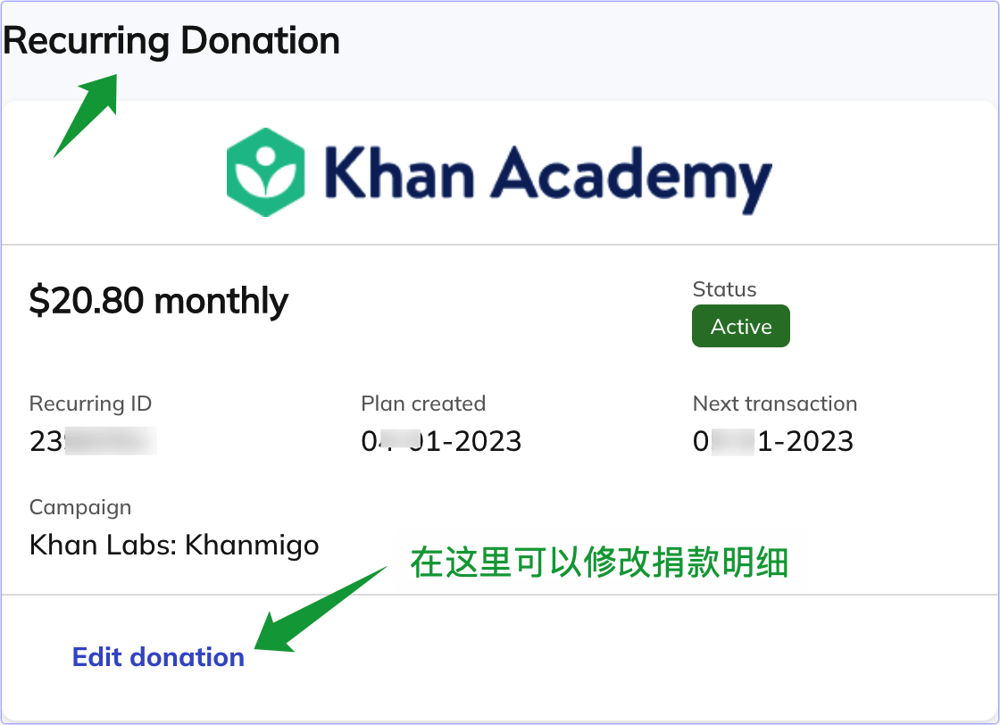

<h1>如何取消可汗学院的捐款</h1>

<h2>基础知识</h2>

<ul>
<li>给捐款可汗学院捐款要使用信用卡或者虚拟信用卡√ </li>
<li>一般是月捐√</li>
<li>捐款时, 可汗学院会在 https://www.classy.org/profile 为你创建一个账号√</li>
<li>一定要记好自己的密码和邮箱(邮箱通常就是你登录可汗学院的邮箱)√
<ul>
<li>你以后可以用账号和密码进入这个页面取消捐款. </li>
</ul></li>
</ul>

<h2>取消捐款</h2>

<ul>
<li>进入页面后, 参考下图修改捐款↓√</li>
</ul>

<p></p>

<ul>
<li>然后可以参考下图取消捐款↓√</li>
</ul>

<p></p>
